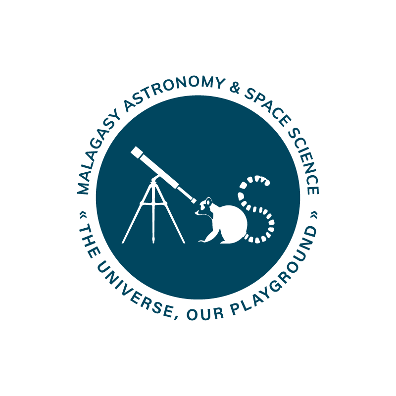
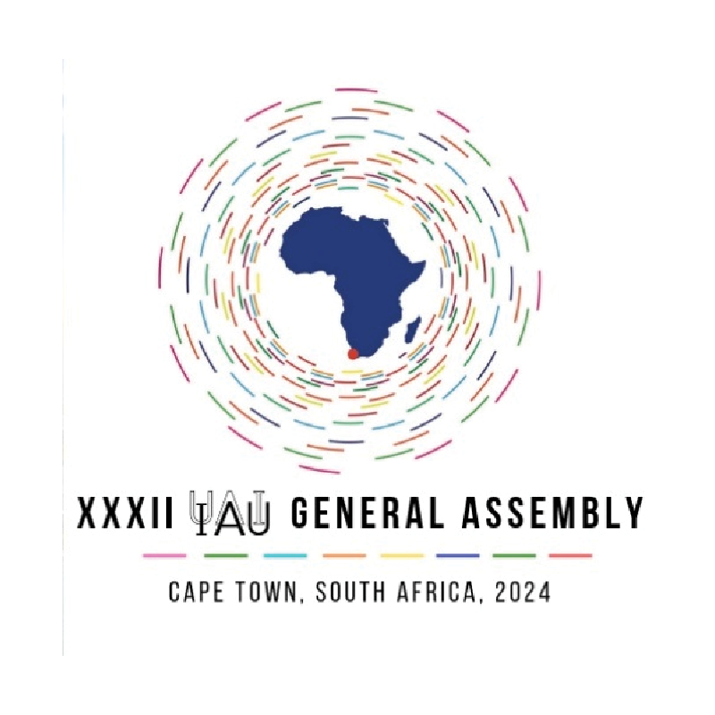
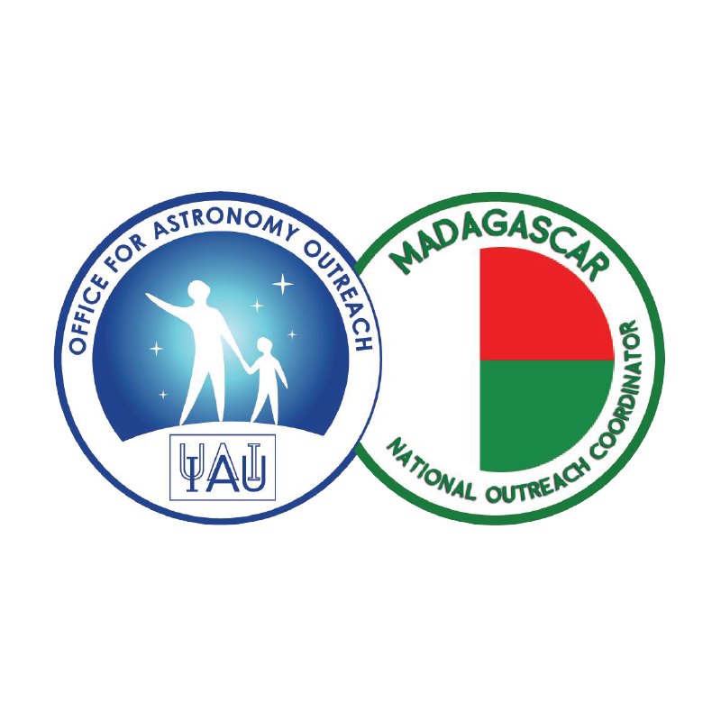
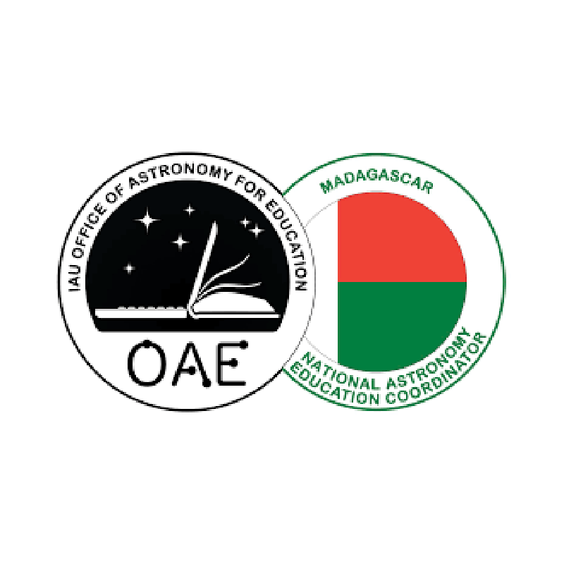
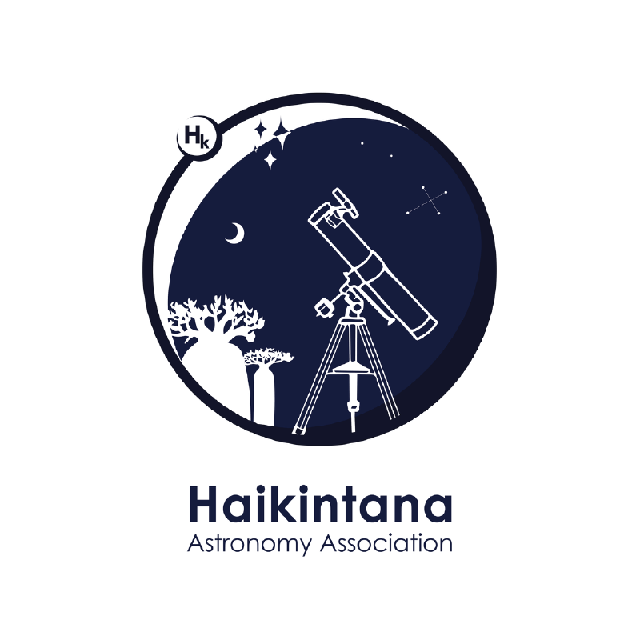
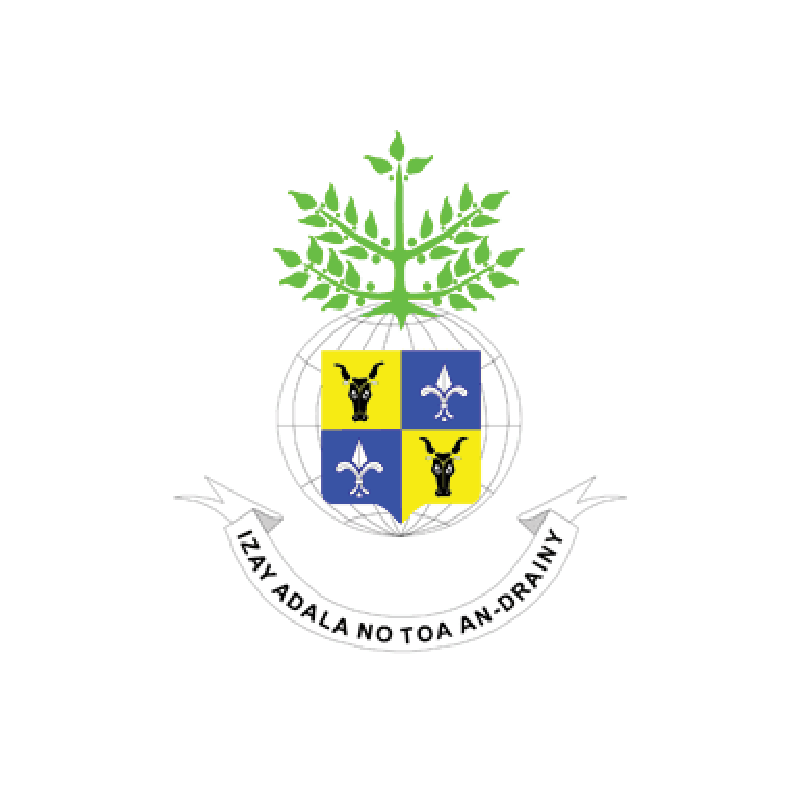

| Home | Registration | Program | Directions | Flyer |
We are happy to circulate the first announcement of the inaugural Malagasy National Astronomy Meeting scheduled to take place on 13-15 December 2023 in Antananarivo, Madagascar.
Under the theme “Astronomy in Madagascar – the past, present, future”, the event is geared towards bringing together Malagasy astronomy community and its key stakeholders to discuss the current status of Astronomy in the country in preparation for the 2024 IAU General Assembly and beyond. The conference will be a three-days hybrid format and will include in-person attendance as well as a digital platform, allowing for greater participation from Madagascar and from across the world.
Sponsored by the IAU General Assembly – Vision 2024, the meeting will be held in a hybrid format and will include in-person attendance limited to 40 participants.The majority of the scientific and outreach programmes will be based on submitted abstracts and is expected to be announced in early September. The expectation is that conference speakers will deliver their talks live either in person or remotely.
The main working language of the conference is ENGLISH.
Registration and abstract submissions are now open. Please register at https://astronomymadagascar.github.io/registration/.
|  |  |  |
|  |  |  |